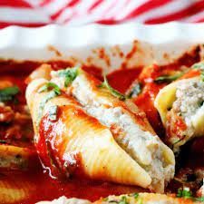

Home
Stuffed Shells
The Shells

Nothing says italian family gathering like some hearty stuffed shells.
Let's dive into this quick and easy recipe that'll stuff more than the shells!
Ingredients
- 1 12 ounce package jumbo pasta shells
- 2 eggs, beaten
- 1 32 ounce container ricotta cheese
- 1 pound shredded mozzarella chesse, divided
- 8 ounce grated Parmesan cheese, divided
- 1 tablespoon dried parslet
- 2 teaspoons salt
- 1 teaspoon ground black pepper
- 1 28 ounce jar pasta sauce
Steps
- Preheat oven to 350 degrees F
- Bring a large pot of lightly salted water to a boil. Add pasta and cook for 8 to 10 minutes or until al dente; drain.
- In a large bowl, mix eggs, ricotta, half the mozzarella, half the parmesan, parsley, salt, and pepper until well combined.
Stuff cooked shells with ricotta mixture and place in a 9x13 inch baking dish.
- In a medium bowl, stir together pasta sauce and reserved mozzarella and parmesan. Pour over stuffed shells.
- Bake in preheated over 45 to 60 minutes, until edges are bubbly and shells are slightly set.